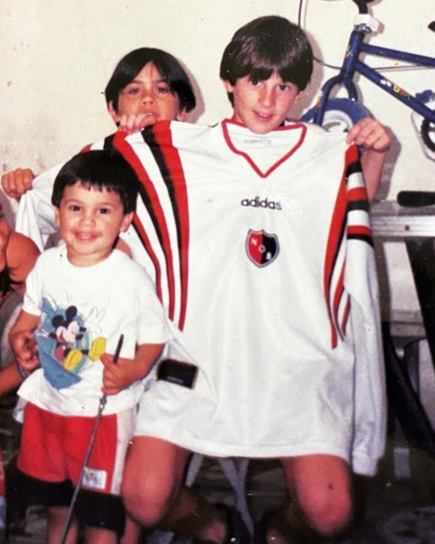
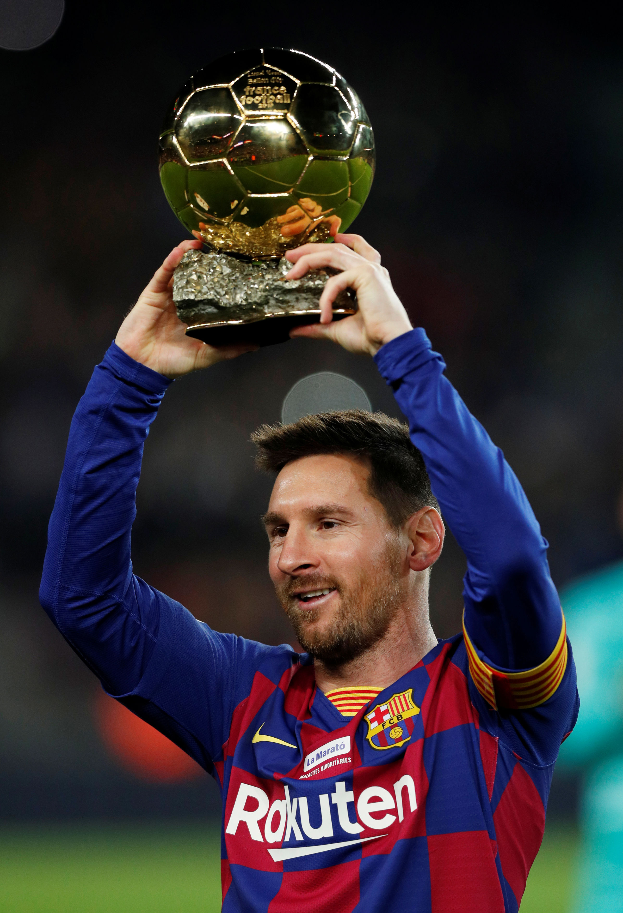
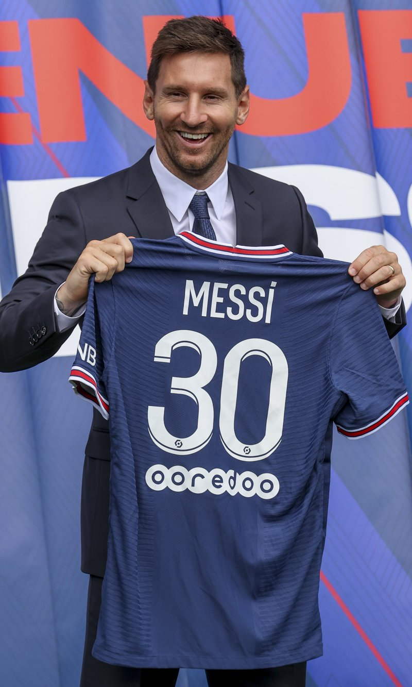
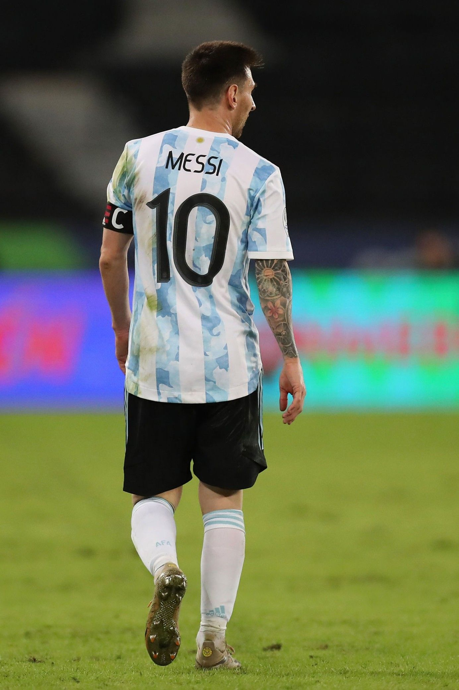

Newell's
Messi jugó en las inferiores de Newell's entre 1994 y 1999. Jugaba en la categoría 1987, conocida como "La Máquina '87", dirigida por Ernesto Vecchio.
Debutó ante Pablo VI el 9 de abril, en un encuentro que Newell's ganó 6-0, con cuatro tantos suyos. Con el club ganó, entre otros títulos, la Copa de la Amistad de Perú en 1997.En su período en Newell's, convirtió 234 goles, con un promedio de 1,32 goles por partido.

Barcelona
Frank Rijkaard lo hizo debutar en partido oficial contra el R. C. D. Español, en el Estadio Olímpico Lluís Companys el 16 de octubre de 2004, cuando sustituyó a Deco ocho minutos antes de terminar el partido. Con diecisiete años, tres meses y veintidós días, se convirtió en uno de los canteranos más jóvenes en debutar en La Liga.
A pesar de que La Liga había aprobado el nuevo contrato por cinco años de Messi con el Barcelona (en el que el jugador aceptaba rebajarse el sueldo durante el primer año), a último momento Laporta le comunicó a Jorge Messi que, por cuestiones de presupuesto, no podía renovar al jugador. El 5 de agosto de 2021, el Barcelona anunció que no podía mantener a Messi, pues hacerlo implicaba sobrepasar el tope de gastos que le permitía la liga española. Messi jugó un total de 778 partidos oficiales, marcó 672 goles y ganó 35 títulos (entre ellos diez Ligas y cuatro Ligas de Campeones).
En una conferencia en las instalaciones del club, el jugador afirmó: "Lo di todo por este club, desde el primer día que llegué hasta el último, nunca imaginé tener que despedirme porque no lo pensaba. Hice todo lo que pude para quedarme y no fue posible"

Paris Saint Germain
El 10 de agosto Paris Saint-Germain anunció la llegada de Messi a través de un video en sus redes sociales. El jugador firmó un contrato por dos años con opción de extenderlo una temporada, con un salario de 36,5 millones de euros y usaría el dorsal 30, el mismo con el que debutó en el Barcelona.
El 28 de septiembre, marcó su primer gol con el PSG, en el minuto '74 después de una pared con Mbappé, en la segunda jornada del Grupo A de la Liga de Campeones ante el Manchester City de Guardiola, con una victoria de los parisinos en el Parque de los Príncipes por 2-0.

Seleccion Argentina
El jugador debutó el 17 de agosto en un amistoso con Hungría, en el que entró al campo en el minuto 63 por Lisandro López, pero solo 47 segundos después fue expulsado por el árbitro Markus Merk tras unos agarrones con el defensor Vilmos Vanczá.
Tras intentarlo una y otra vez llego el dia tan esperado,el 10 de julio, Argentina derrotó a Brasil en el Maracaná por 1-0 en la final. En su quinta final internacional, Messi consiguió su primer título, el primero de Argentina desde la Copa América 1993 y la decimoquinta Copa América en su historia. Había participado directamente en nueve de los doce goles marcados por Argentina, con cuatro tantos y cinco asistencias. Fue nombrado mejor jugador y máximo goleador del torneo.
Lionel, logro cortar la sequia de 4 finales perdidas, y pudo conseguir lo que tanto soño y busco un titulo con su amada argentina, de hecho en una nota habia declarado, que cambiaria todos sus titulos por ganar algo con la seleccion. Es el maximo goleador en la historia con 81 goles en 160 partidos, y va por mas, en noviembre del 2022, buscara lograr el titulo del mundial, que tanto lo merece.